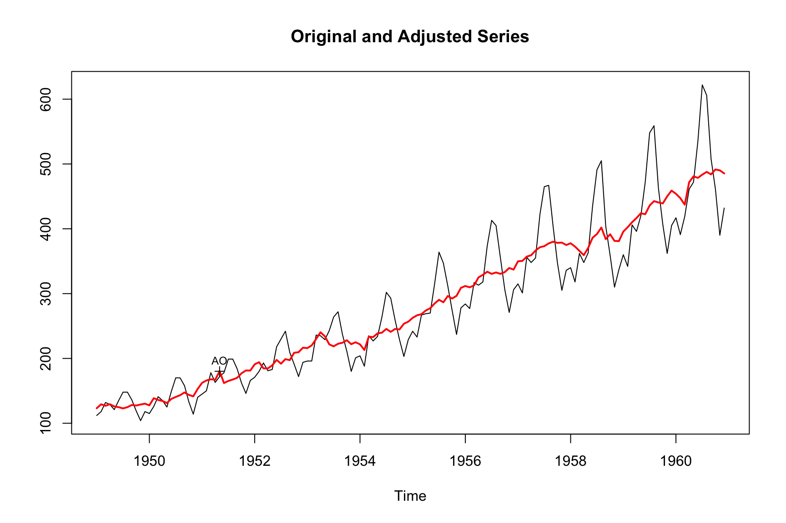
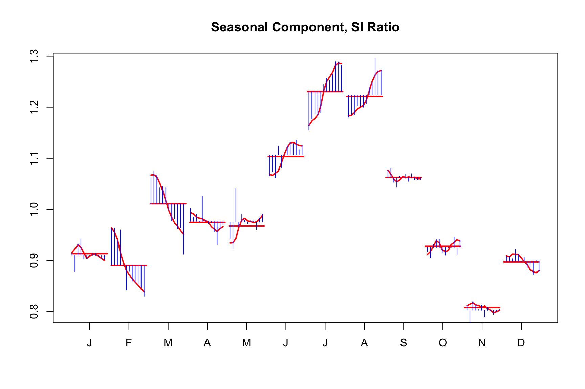

observed <- AirPassengers # the observed series
filter_trend = rep(1, 13) / 13 # a symetric filter that uses 6 obs. on each side
trend = stats::filter(observed, filter = filter_trend, sides = 2)
tsbox::ts_plot(observed, trend)
You are reading an early draft of Seasonal Adjustment in R. This chapter is currently a dumping ground for ideas, and we don’t recommend reading it.
It is part of the course materials intended for Jan 21, 2023.
One of the two main methods available in X-13ARIMA-SEATS to extract trend and seasonal components is the X-11 method. This is a nonparametric procedure that works by passing moving-average filters over the data to extract the intended components. Since both X-11 and SEATS apply filters to time-series, we start with a general discussion on seasonal decomposition that applies both to X-11 and STEATS. SEATS will be discussed in greater detail in Chapter 7.
As we have seen in the previous chapters, the core of seasonal adjustment is the decomposition of a time series into a trend, a seasonal and and irregular component. Algebraically, we write the fundamental identity as:
\[ X_t = T_t + S_t + I_t \]
where, \(X_t\) is the observed time series, \(T_t\) the trend, \(S_t\) the seasonal component and \(I_t\) the irregular component. Once the decomposition is done, the seasonally adjusted series can be computed as follows:
How to perform the seasonal decomposition? Ultimately, both X-11 and SEATS estimate the components \(T_t\), \(S_t\), \(I_t\) by passing moving average filters over the series. In order to get unbiased results at the margin, the underlying series is usually extended by forecasts from the regARIMA model discussed in the Chapter 5.
How do we apply moving average filters over a series? The trend component can be estimated by applying a moving average over the observed series. For each point in time, an simple average that uses a certain number of observations both on the left and the right of the series. Because the window is symmetric, we need the series extended by forecasts and backcasts.
Once the trend component is computed, we can subtract it from the original series to compute a detrended series.
FIXME complete after discussion w Jim.
Let’s apply the previous discuss by hand, using basic R functions. A basic trend filter could be a simple filter with 13 filter weights all equal to 1/13. We use these weights to estimate the trend of the AirPassengers series.
observed <- AirPassengers # the observed series
filter_trend = rep(1, 13) / 13 # a symetric filter that uses 6 obs. on each side
trend = stats::filter(observed, filter = filter_trend, sides = 2)
tsbox::ts_plot(observed, trend)
After estimating the trend we now can estimate the seasonal component of the detrended series using a 3x3 seasonal filter that has weights (1,2,3,2,1)/9.
detrended <- observed - trend
filter_seas = c(1, 2, 3, 2, 1) / 9
seasonal = stats::filter(detrended, filter = filter_seas, sides = 2)
tsbox::ts_plot(detrended, seasonal)DISCUSS, but isn’t the idea of estimating the seasonal component more something like this? Where we average among same periods?
detrended <- observed - trend
filter_seas = c(1, 1, 1, 1, 1) / 5
suppressMessages(library(dplyr))
seasonal <-
ts_tbl(detrended) |>
mutate(month = lubridate::month(time)) |>
group_by(month) |>
mutate(seasonal = stats::filter(value, filter = filter_seas, sides = 2)) |>
ungroup() |>
select(time, value = seasonal) |>
ts_ts()
tsbox::ts_plot(detrended, seasonal)
By subtracting this seasonal estimate we have our crude seasonal adjustment.
adjusted = observed - seasonal
tsbox::ts_plot(observed, adjusted)We see some obvious flaws this this adjustment.
The most obvious one is the insufficient length of the adjusted series that is caused by the symmetric filters. A simple trick to circumvent the problem is to forecast the series - and this is exactly what X13-ARIMA-SEATS does.
Visually, there appears to be residual seasonality and the heteroskedastic variance of the series is not reflected in the seasonal component appropriates. This motivates the X-11 method which is an iterative application of this simple procedure we have just performed. Each subsequent iteration allows the estimated components to be refined by selecting better filters and handling extreme values and regression effects. The first adaptation is to consider a transformation of our series from AirPassengers to log(AirPassengers). Our simple example performed an additive seasonal adjustment. This transformation will require a move to a multiplicative decomposition.
FIXME a few lines of history.
In order to use symmetric moving average filters at the end of the time series (current value), a regARIMA model is used to forecast extend the series. This RegARIMA model is where users can test for or specify outliers, trading day and moving holiday regressors in their adjustment. The forecast extended series is then used to filter.
Additionally, X-11 has a built in extreme value procedure included. This procedure identifies extremes and replaces. This results in a robust procedure that can automatically choose filters and identify extreme values without much user intervention. All that needs to be evoked beyond the default seas() call is to turn on the X11 spec option.
m <- seas(AirPassengers, x11 = "")
summary(m)
#>
#> Call:
#> seas(x = AirPassengers, x11 = "")
#>
#> Coefficients:
#> Estimate Std. Error z value Pr(>|z|)
#> Weekday -0.0029497 0.0005232 -5.638 1.72e-08 ***
#> Easter[1] 0.0177674 0.0071580 2.482 0.0131 *
#> AO1951.May 0.1001558 0.0204387 4.900 9.57e-07 ***
#> MA-Nonseasonal-01 0.1156204 0.0858588 1.347 0.1781
#> MA-Seasonal-12 0.4973600 0.0774677 6.420 1.36e-10 ***
#> ---
#> Signif. codes: 0 '***' 0.001 '**' 0.01 '*' 0.05 '.' 0.1 ' ' 1
#>
#> X11 adj. ARIMA: (0 1 1)(0 1 1) Obs.: 144 Transform: log
#> AICc: 947.3, BIC: 963.9 QS (no seasonality in final): 0
#> Box-Ljung (no autocorr.): 26.65 Shapiro (normality): 0.9908
#> Messages generated by X-13:
#> Warnings:
#> - Visually significant seasonal and trading day peaks have
#> been found in one or more of the estimated spectra.Before further discussion about the details of the X-11 process, let us see what happened during this modeling run…
When using the x11 spec you can change the length of the filter used for the trend and seasonal components with the trendma and seasonalma arguments respectively. Additionally, sigmalim will control the amount of extreme value adjustment that is done during the seasonal adjustment.
The X-13ARIMA-SEATS development was highly motivated to study economic time series. As such, the default seasonal adjustment mode is multiplicative due to most seasonal economic time series displaying seasonal fluctuations that increase and decrease along with the level of the time series.
If your series does not have this feature then additive adjustment might be more appropriate. This can be changed in the mode argument of the x11 spec. For example, seas(x, x11.mode = 'add') will perform an additive x11 run. There exist two other models for decomposition, pseudo-additive and log additive. These are less common than additive and multiplicative models and are not the focus of this text. If your series has some extremely small values in certain months (quarters) then pseudo-additive models could be worth further investigation. It has been observed that when multiplicative seasonal adjustment produces more extreme values in conjunction with small seasonal factors then pseudo-additive adjustment should be explored. NEED TO SHOW USERS HOW TO VIEW THEIR EXTREME VALUES - D8.B TABLE DESIGNATIONS NEXT TO OBSERVATIONS. A good reference on the subject is Baxter (1994).
We present the following material as optional reading material. For those interesting in simply performing seasonal adjustment, an understanding of the frequency domain of a time series, is not manditory. However, the spectral domain representation will help the interested reader further understand the impact a linear filter has on a time series. Since both X-11 and SEATS use linear filters this will deepen the users understanding of whichever seasonal adjustmnet proceedure is choosen.
Seasonal adjustment is highly motivated by the study, estimation, and ultimately removal of regular fulutions in a time series. The words regular fluctuations immediately leads us to trigonomic functions sin and cos. It turns out, there exist two equivilant representations of a time series. The first, and usually easier for beginners to understand, is the time domain representation. This is expressing how \(X_t\) evolves as time \(t\) evolves. For example, an MA(1) time domiain representation is: \[X_t = w_t + \theta w_{t-1}\] The second, is a frequency domain representation of a series. Here, \(X_t\) is represented as the sum of trigonometric functions. More specifically, the spectral density of \(X_t\) is the fourier transform of the acf of the series. \[f_X(\nu) = \sum_{h = - \infty}^{\infty} \gamma(h) e^{-2\pi i \nu h}\] For example, the spectral density of an MA(1) is: \[f_X(\nu) = \sigma^2 \left( 1 + \theta^2 + 2\theta\cos(2\pi\nu) \right)\] The important concept here is to understand that these representations are equivalent; meaning they contain the same information about a time series, such as encoding the acf function.
The spectral density of an uncorrelated sequence with variance \(\sigma^2\) is simply \(f(\nu) = \sigma^2\). Notice this is not a function of any frequencies but just a constant for any \(\nu\). Hence, it is a stochastic process that equally weight all frequencies in the spectrum. This is precisely where the names white noise comes from as white light has the same property of reflecting all color bands equally, combining to produce white light.
Now that we know we can express a time series either in the time domain or as a sum of sin and cosine curves, we get to the important part for seasonal adjustment - how does a linear filter effect the input series? Assume we want to pass a moving-average linear filter over our data \(X_t\) with weights \(\ldots, w_{-2}, w_{-1}, w_{0}, w_{1}, w_{2}, \ldots\). Assume the output of the linear filter will be \(Y_t\) such that \[Y_t = \sum_{j = -\infty}^{\infty} w_j X_{t+j} = \ldots + w_{-2}X_{t-2} + w_{-1}X_{t-1} + w_{0}X_{t} + w_{1}X_{t+1} + w_{2}X_{t+2} + \ldots\] This type of linear filter can be expressed as a linear operator in terms of the backshift operator \(B\) , where \(BX_t = X_{t-1}\) and \(B^{-1}X_t = X_{t+1}\). \[W(B) = \ldots + w_{-2}B^2 + w_{-1}B + w_{0} + w_{1}B^{-1} + w_{2}B^{-2} + \ldots\] and hence \(Y_t = W(B)X_t\). We can now express the spectral density of \(Y_t\) in terms of the input spectral density \(X_t\). \[f_Y(\nu) = \underbrace{\lvert W(e^{2\pi i \nu}) \rvert^2}_{\text{Square Gain Function}} f_X(\nu)\]. There is some mathematical machinery needed when understanding exactly what the square-gain function, \(\lvert W(e^{2\pi i \nu}) \rvert^2\), is. However, for the sake of this text we just know that it tells us exactly the frequencies of \(X_t\) that amplified in the output \(Y_t\) as well as the frequencies of \(X_t\) that will be annihilated (when the square-gain function equals 0).
We introduce the moving average filters and subsequently plot the filter weights along with the values of the squared gain function. The X11 spec also allows users to control the length of the trend and seasonal moving average filters used during the adjustment. Generally speaking, longer filters imply a more stable seasonal component and shorter filters a more changing seasonal pattern. Of course, a longer filter will use more data for the calculation of components at each time point. This is an important observation and understanding it might help a user decide on a short or long filter. Since longer filters use more data there tend to be smaller revisions when a new data point is added. However, there will be revisions to data values further back.
A shorter filter is just the opposite, they tend to produce larger revisions but they do not extend as far back into the series. If a filter is not choosen by the user then automatic filter selection is used. To understand the length of a filter let’s look at the (finite) number of choice available in during an x11 adjustment. Table 6.1 shows the different filters available for the seasonal component and the trend component.
| Value | Description |
|---|---|
s3x1 |
3×1 moving average |
s3x3 |
3×3 moving average |
s3x5 |
3×5 moving average |
s3x9 |
3×9 moving average |
s3x15 |
3×15 moving average |
stable |
Stable seasonal filter. A single seasonal factor for each calendar month or quarter is generated by calculating the simple average of all the values for each month or quarter (taken after detrending and outlier adjustment). |
x11default |
A 3×3 moving average is used to calculate the initial seasonal factors in each iteration, and a 3×5 moving average to calculate the final seasonal factors. |




The X11 method is sensitive to outliers. Beyond the specified regressors (AOs, level shifts, temporary changes, etc), an X11 adjustment will replace extreme values after the initial crude trend estimation occurs in the first iteration of the X11 method.
The replacement proceedure looks as follows:
flowchart LR
A( Estimate standard deviation <br> of irregular, s )-->B(Compare SI-ration to <br> multiples of s)
B-->C(SI < 1.5 * s)
B-->D(1.5 * s < SI < 2.5 * s)
B-->E(SI > 2.5 * s)
C --> F(SI unchanged)
D --> G(SI linearly weighted)
E --> H(SI fully weighted)
In a multiplicative adjustment, the detrended series is reffered to the SI ratio. It is an estimate of the seasonal component. The SI ratio is used to identify extreme values during the initial and intermediate steps of the X-11 method.
FIXME: explain how this is related to transform.